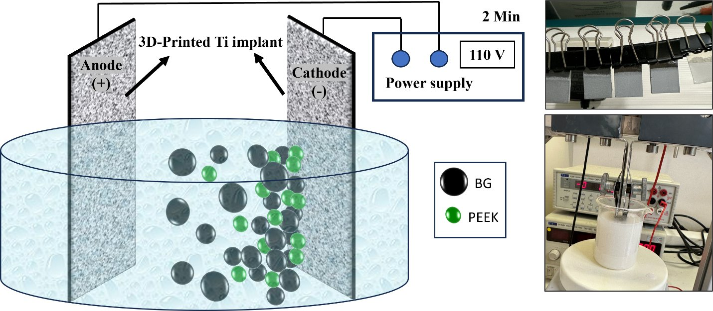
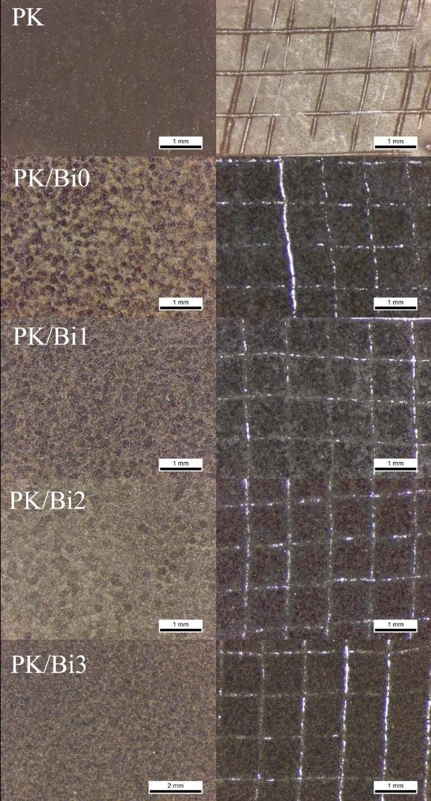

← Back to home← Volver al inicio
Electrophoretic depositionDeposición electroforética
An electric field drives charged PEEK and bismuth-containing borate glass particles onto a 3D-printed titanium alloy electrode.Un campo eléctrico arrastra partículas cargadas de PEEK y de vidrio de borato con bismuto hacia un electrodo de aleación de titanio impreso en 3D.
The techniqueLa técnica

RADIOBIOCOATS, FunGlass. © TnUAD.Selected conditionCondición seleccionada
- VoltageVoltaje
- 110 V (≈220 V/cm)
- Electrode gapDistancia entre electrodos
- 5 mm
- TimeTiempo
- 2 min
- SuspensionSuspensión
- 3.3 wt% glass, 5 wt% PEEK, citric acid in ethanol3,3 % vidrio, 5 % PEEK, ácido cítrico en etanol
- Heat treatmentTratamiento térmico
- 350 °C, 30 min
- GlassVidrio
- Bi-13-93B3 (0, 4.9, 9.5, 19.3 wt% Bi2O3)
- SubstrateSustrato
- 3D-printed Ti-6Al-4V ELITi-6Al-4V ELI impreso en 3D
Impactful resultsResultados destacados
78–93 µmGlass-containing coatings reach 78–93 µm, thicker than PEEK alone (62 µm).Los recubrimientos con vidrio alcanzan 78–93 µm, más que el PEEK solo (62 µm).
Grade 1The coating with 19.3 wt% Bi2O3 reached the best adhesion grade in the cross-cut test.El recubrimiento con 19,3 % de Bi2O3 alcanzó el mejor grado de adherencia en el ensayo de corte cruzado.
~10 wt%The coating with about 10 wt% Bi2O3 gave the lowest viability of E. coli and S. aureus.El recubrimiento con alrededor de 10 % de Bi2O3 dio la menor viabilidad de E. coli y S. aureus.
↑ MG-63MG-63 activity on the coatings rises from the bismuth-free glass toward the bismuth-richer glasses.La actividad de las MG-63 sobre los recubrimientos aumenta desde el vidrio sin bismuto hacia los vidrios con más bismuto.





All radiographsTodas las radiografíasAll in vitro testsTodos los ensayos in vitroOther techniquesOtras técnicas